TIA Portal V20 - Circuito Semáforo Sequencial
Configuração do Dispositivo (Device Configuration)
Antes da Tabela de Variáveis (Default Tag Table)
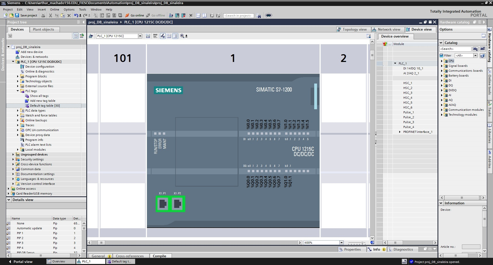
Depois da Tabela de Variáveis (Default Tag Table)
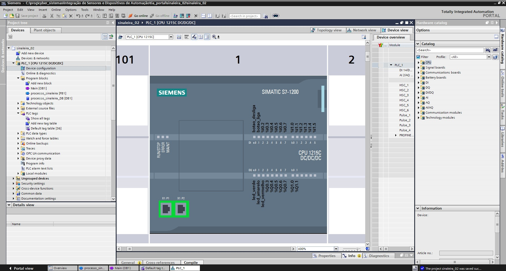
Por quê / Função de usar o Device Configuration
Função: Declarar e parametrizar o modelo exato do hardware (CPU 1215C DC/DC/DC) que será utilizado no projeto.
Por quê usar: É o passo inicial obrigatório para qualquer projeto no TIA Portal. Sem especificar o hardware correto, o software não consegue compilar o código nem realizar o download para a máquina, pois precisa conhecer os limites físicos de memória, a quantidade exata de pinos de automação e as configurações de comunicação de rede do CLP real.
Tabela de Variáveis (Default Tag Table)
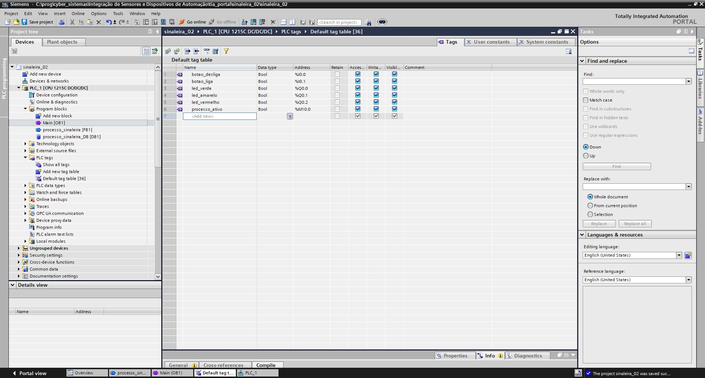
Por quê / Função de usar a Tag Table
Função: Mapear os endereços físicos de entrada e saída do CLP, vinculando-os a nomes simbólicos.
Por quê usar: Evita que o programador tenha de trabalhar diretamente com códigos abstratos de máquina (como %I0.0 ou %Q0.1) dentro da lógica Ladder. Ao criar este "dicionário", o desenvolvimento torna-se intuitivo, profissional e de fácil manutenção, permitindo que alterações em portas físicas reais sejam corrigidas centralizadamente na tabela sem quebrar o programa.
Bloco Principal (OB1)
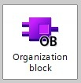
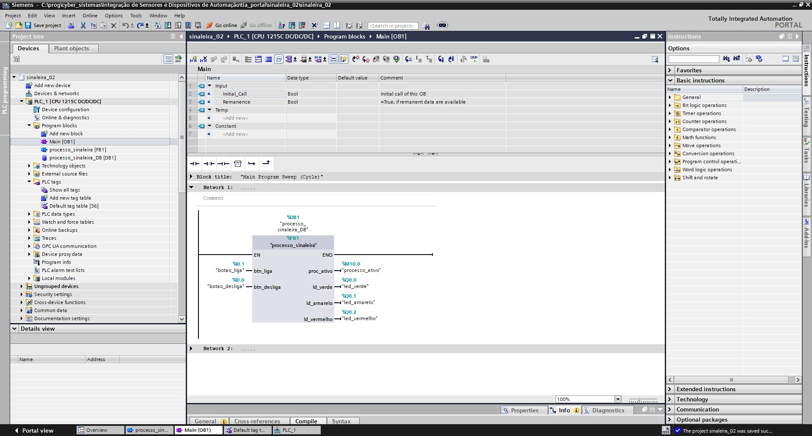
Por quê / Função de usar o OB1
Função: Atuar como o bloco de organização cíclico padrão e ponto de partida do sistema operacional do CLP.
Por quê usar: O CLP executa o código de forma sequencial repetitiva (ciclo de varredura / scan). O OB1 é essencial porque funciona como o gerenciador mestre: tudo o que deve rodar continuamente precisa estar dentro dele ou ser chamado por ele. No projeto, ele serve para invocar a sinaleira e garantir que a lógica do semáforo nunca pare de rodar.
Bloco de Função (FB1) - Lógica da Sinaleira
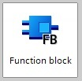
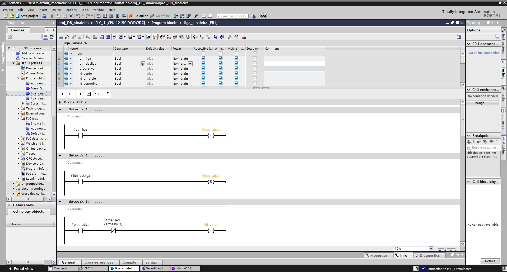
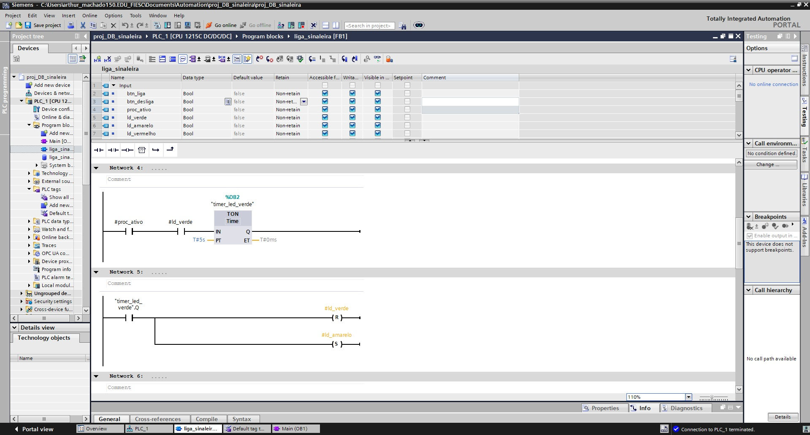
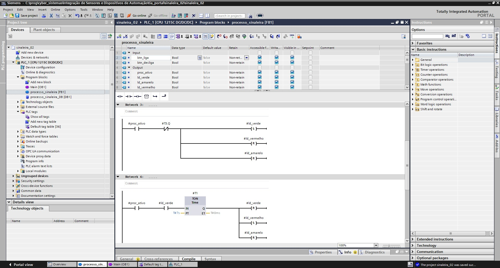
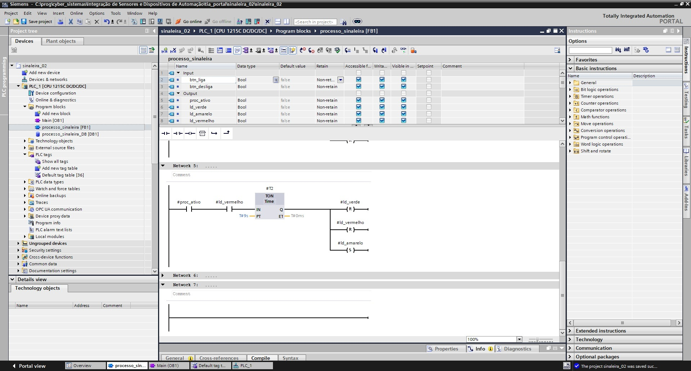
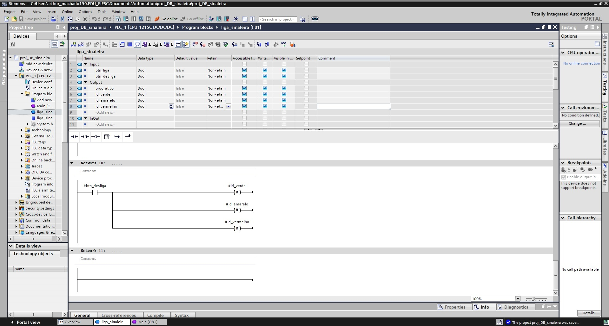
Por quê / Função de usar um Bloco FB
Função: Encapsular toda a lógica do semáforo em um bloco com memória própria (Data Block de Instância), permitindo que o sistema lembre do seu estado atual de um ciclo de leitura para o outro.
Por quê usar FB: O controle de um semáforo depende fortemente de temporizadores (que precisam guardar o tempo já percorrido) e da retenção de estados (saber exatamente qual luz está acesa no momento). O Function Block (FB) é a escolha ideal na programação CLP porque ele retém essas informações na memória sem perder os dados. Além disso, deixa o bloco principal (OB1) muito mais limpo e permite que a mesma lógica seja reaproveitada facilmente (se você quisesse adicionar um segundo semáforo, bastaria chamar o FB1 novamente criando um novo Data Block, sem misturar as temporizações).